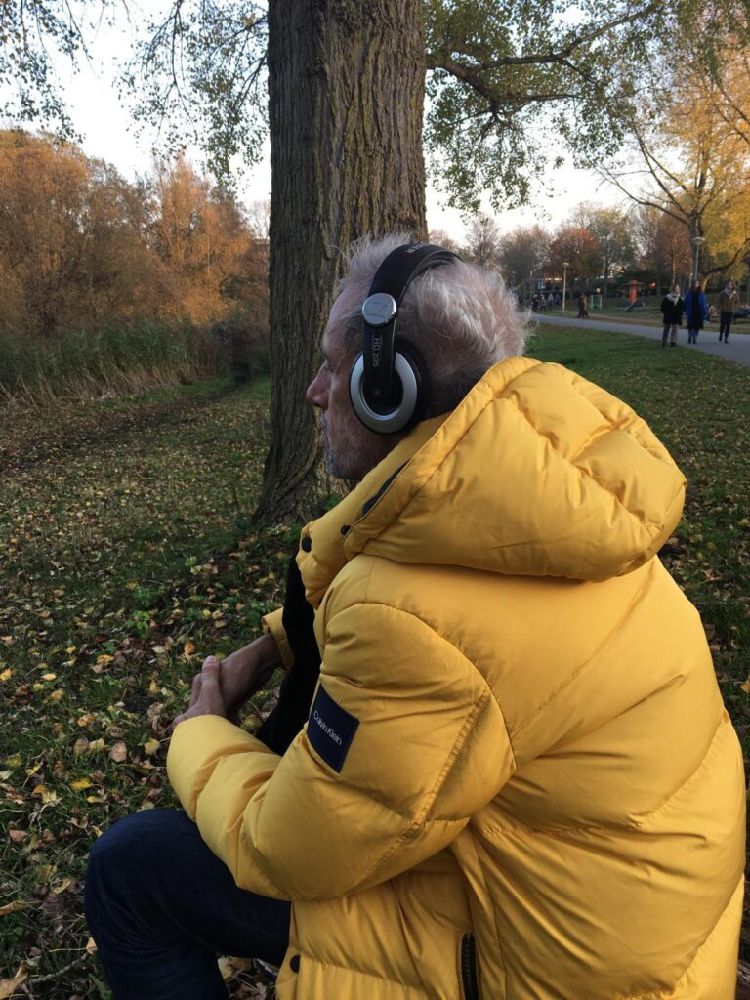
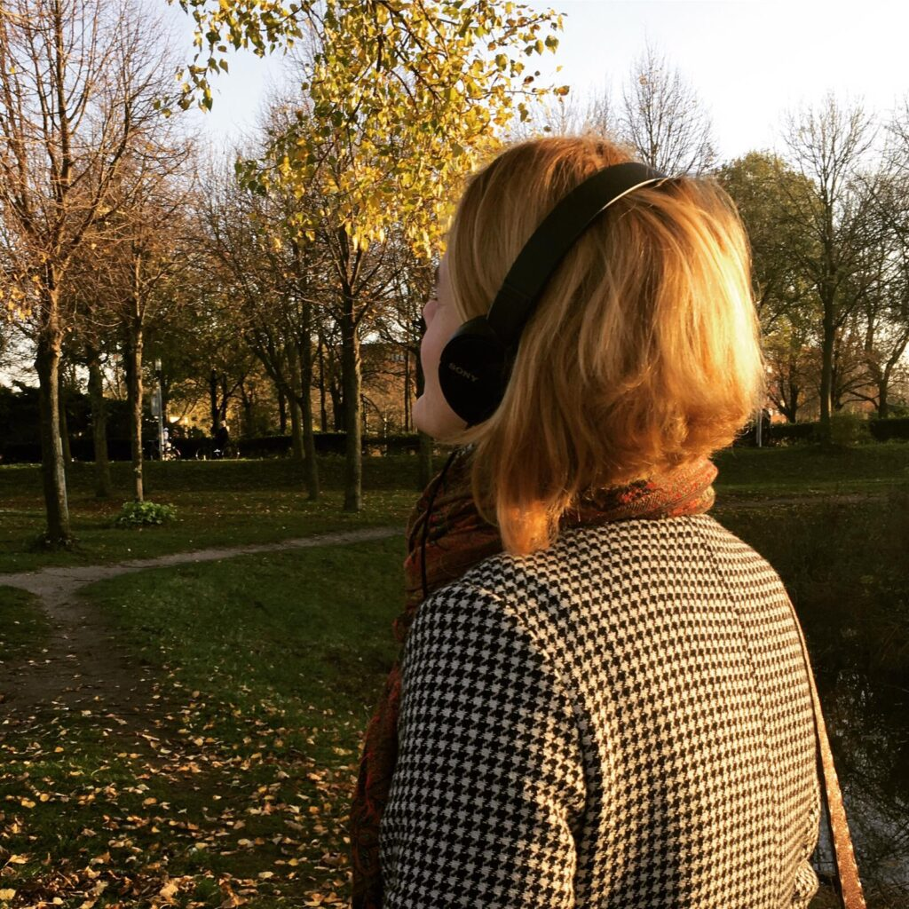
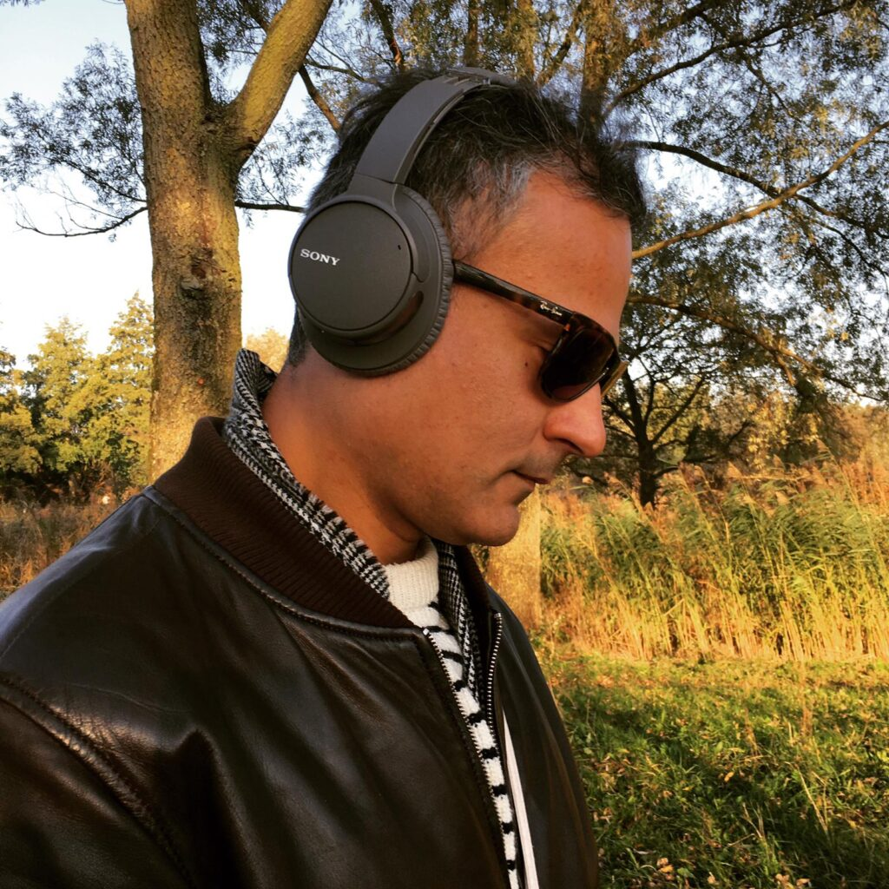
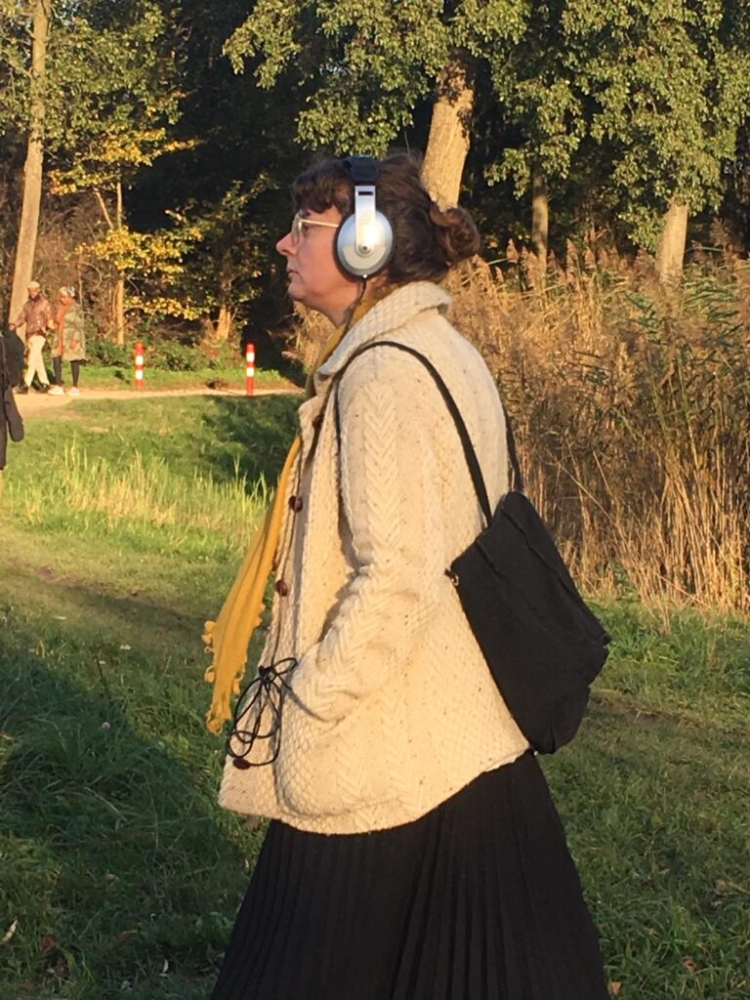

Marblehead Yuyudia was commissioned as part of the festival 'A Matter of (In)digestions', which took place in Amsterdam as well as online in October-November 2020.
Since they met in 2001, the joint work of Magali Daniaux & Cédric Pigot bears the dual hallmark of experimentation and performance. Their pieces bring together various media, associating elements from opposite ranges, with a taste for connections between Sci-Fi and documentary forms, high-tech engineering and fantasy tales, heavyweight materials, and fleeting sensations. Starting with installations and objects, their work soon included experimental actions and more immaterial artistic gestures. Videos, sound art, music, poetry, olfactive research, virtual works bordering the digital arts have formed, over the past years, a cycle of works dealing with climate change, economic, political, and geostrategic issues, urban development, and food management.



